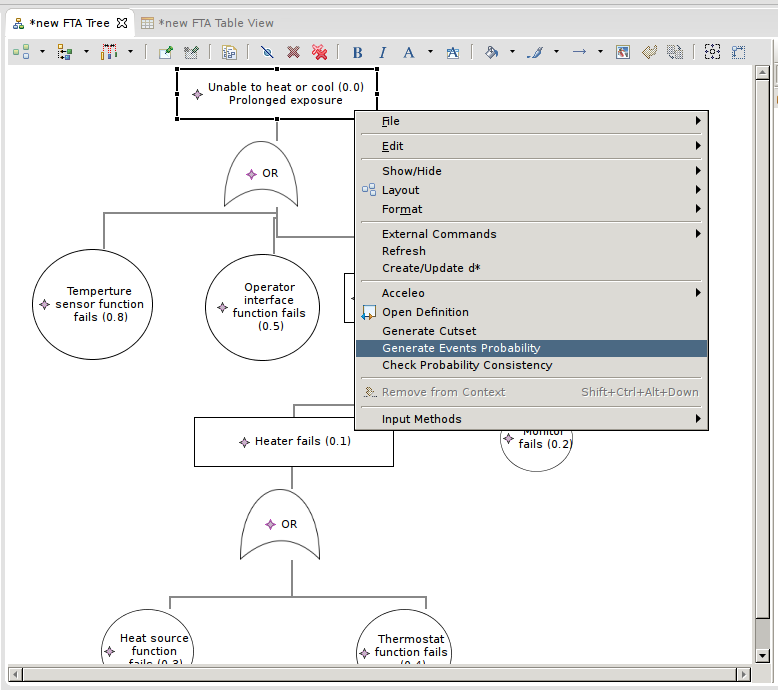
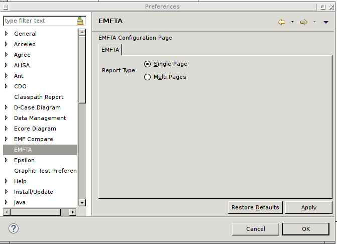

In order to generate the cutset from an EMFTA model, select the top-level event you want to analyze and select the option Generate Cutset.
It then creates a new file at the root directory of your project. The file can be opened with a Spreadsheet program (such as Excel or LibreOffice). EMFTA can produce two types of files:
In the following, we explain how to switch from one report type to the other.
You can change the type of report by going into the EMFTA preferences in the Eclipse preferences. You can then select the type of of report you would like to generate, as shown below.
